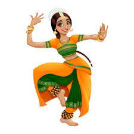
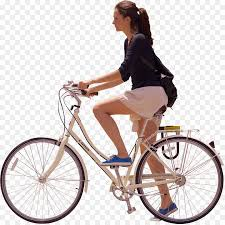

Food is something that nobody can live without. Wherever you may be, you may engage yourself in cooking. People who look to cook say that they forget all their worries when they are on it. The kind of satisfaction people get from preparation to perfection is immense.It isn't something that must be done to the exclusion of other things. You can listen to music and dance around your kitchen as you prepare dinner. You can spend quality time with others while cooking, too.
Dancing is a hobby that is experienced in leisure, but it is an effective form of sports that frames a healthy mind and body. Dancing is a boon for our body, too, as it strengthens and tones up all the muscles of our body and releases the dopamine hormone in our body, which makes it happy, joyful, and active.
Bicycling is a way for people to get outside and get moving after a day of being indoors at work or school. As a hobby, it promotes good health and physical fitness. In addition, bicycling is relatively inexpensive when compared to other activities. To get the most enjoyment out of bicycling, it helps to start out correctly as a beginner. This means learning the basics about bicycling and bike care, which will build confidence while riding and help prevent injury to oneself and others.
